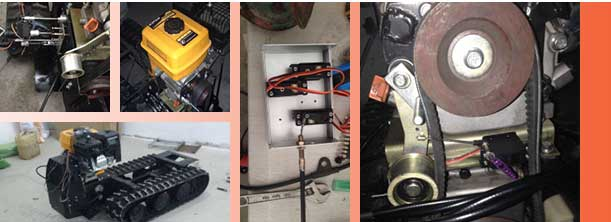
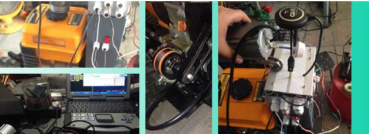

2013 年 7 月经过多方面考虑，希望能研发一套可以简单操作就能完成基本农事作业的机器平台，用于搭载各种农机具。
2014 年 8 月在浑南新区车库内进行尝试性改进，通过了解变速箱结构，以及对变速箱拆装，采用伺服舵机带动蜗杆取代原始线控的拉伸动作。
总结结构:伺服机扭力输出小，经过蜗杆减速，档位变换速度低，但可以实现前进后退命令。左右转向命令需要离合器衔接控制才会稳定切入齿轮档位。但动力输出稳定，未进行油门控制。

2014 年 10 月搬回至苏家屯陈相，经初步测试理论后，将原有档位控制杆全部拆除，更换伸缩杆，12V 直流控制，用的 DOMAN 的高压舵机驱动板，效果明显好转，在进过十余次测试后，发现分项离合器回弹系数不够，便将下部离合改为互相支撑，公用一个拉簧的结构。回弹速度足够，但是伸缩拉杆与原始在浑南设备结构相似，存在问题便是换挡时间较长，对于命令的相应较慢，但外形相对比较要标准许多。
2014 年 11 月控制系统初步到位，功能涵盖：OSD 视频采集系统、GPS 导航系统、红外激光取直系统、蓝牙系统、声呐避障系统、以及供电数据监测回传系统。进行组装后在遥控越野车上进行测试，误差约为±0.75M
2015 年 01 月，设备总体组装，经过对编码器、电位器、耦合器、继电器的改进，整体协调测试，效果远远高于原先测试程度。


Copyright ©360.cn. All Rights Reserved. 京ICP证080047号 技术支持：天作星